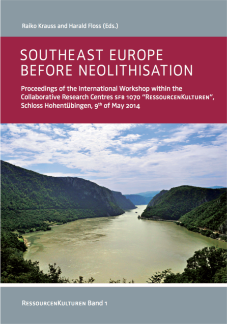

Publikationen
Bisher erschienene Bände

Raiko Krauss/Harald Floss (eds.), Southeast Europe before Neolithisation. Proceedings of the International Workshop within the Collaborative Research Centres SFB 1070 “RessourcenKulturen”, Schloss Hohentübingen, 9th of May 2014. RessourcenKulturen 1 (Tübingen 2016). ISBN: 978-3-946552-01-7 Seiten: 222 weitere Informationen
2016
- Ahlrichs, J.J./ Henkner, J./ Teuber, J./ Schmidt, K./ Scholten, Th./ Kühn, P./ Knopf, Th., Archaeological and Archaeopedological Approaches to Analyze the Development of Marginal Areas in Prehistory (2016, eingereichter Artikel).
- Baten, Joerg, “Was There a “Curse of Natural Resources”? , in Baten, J. (ed.),A History of the Global Economy: 1500 to the Present (2016, forthcoming at Cambridge University Press).
- Baten, Joerg, “Institutional Development in World Economic History,” in Baten, J. (ed.), A History of the Global Economy: 1500 to the Present (2016, forthcoming at Cambridge University Press).
- Ghanem, Rima and Baten, Joerg, “The Middle East and Central Asia 1500-2010”, in Baten, J. (ed.), A History of the Global Economy: 1500 to the Present (2016, forthcoming at Cambridge University Press).
- Herkert, Klaus (2016): Réévaluation des collections palélithiques de la Côte Chalonnaise en dépôt des musées. In: Floss, Harald/ Hoyer, Christian Thomas/ Frick, Jens Axel/ Herkert, Klaus (Hrsg.) (2016): Projet Collectif de Recherche: Le Paléolithique supérieur ancien en Bougogne mérodinale. Génese, chronologie et structuratuion intern, évolution culturelle et technologique. Rapport annuel 2015, Tübingen S. 51-67. (unpublizierter Bericht)
- Herkert, Klaus / Macioszczyk, Bernard / Floss, Harald (2016): Prospections à Germolles en Roche. In: Floss, Harald/ Hoyer, Christian Thomas/ Frick, Jens Axel/ Herkert, Klaus (Hrsg.)(2016): Projet Collectif de Recherche: Le Paléolithique supérieur ancien en Bougogne mérodionale. Genèse, chronologie et structuration interne, évolution culturelle et technologique. Rapport annuel 2015, Tübingen S. 98-105. (unpublizierter Bericht)
2015
- Ahlrichs, J. J. – Henkner, J. – Schmidt, K. – Scholten, T. – Kühn, P. – Knopf, T., Bronzezeitliche Siedlungsdynamiken zwischen der Baar und angrenzenden Naturräumen. In: D. Neumann – B. Nessel (Hrsg.), Transporte, Transportwege und Transportstrukturen. Jahressitzung der Arbeitsgemeinschaft Bronzezeit, Tübingen 30.–31. Oktober 2015. Eingereicht zum peer-review.
- Bartelheim, M./ Hardenberg; R./ Knopf, T./ Scholz, A./ Staecker, J., ‘ResourceCultures’: A concept for investigating the use of resources in different societies. In: A. Danielisová/M. Fernández-Götz (Hrsg.) Persistent economic ways of living. Production, distribution, and consumption in Late Prehistory and Early History, Budapest, Archaeolingua 2015, 39-50.
- Baten, Joerg and Stefan Priwitzer, “Social and Intertemporal Differences of Basic Numeracy in Pannonia (1st Century BCE- 3rd Century CE)”, Scandinavian Economic History Review 63-2(2015), 110-34.
- Herkert, Klaus / Siegeris, Markus / Chang, Judy-Yun / Conard, Nicholas J. / Floss, Harald (2015): Zur Ressourcennutzung später Neandertaler und früher moderner Menschen. Fallbeispiele aus dem südlichen Burgund und der Schwäbischen Alb. In: Mitteilungen der Gesellschaft für Urgeschichte - 24 (2015), S. 141-172.
- Klocke-Daffa, Sabine: “My dad has 15 wives and 8 ancestors to care for”. Conveying anthropological knowledge to children and adolescents. In: Tauber, Elisabeth / Zinn, Dorothy (eds.): The Public Value of Anthropology: Engaging Critical Social Issues through Ethnography. Bozen/Bolzano: Bolzano University Press. 2015.
- Klocke-Daffa, Sabine: Hauskinder – Großmachkinder – Logierkinder: Die Aufnahme von Kindern als Ressource im Kontext sozialer Sicherung. In: Gronemeyer, Reimer / Fink, Michaela (Hrsg.): Afrikanische Kindheiten. Soziale Elternschaft und Waisenhilfe in der Subsahara. Bielefeld: Transcript 2015, S. 59-80. 2015.
- Knopf, T./ Ahlrichs, J./ Henkner, J./ Scholten, Th./ Kühn, P. (Publikation): Archäologische und bodenkundliche Untersuchungen zur Besiedlungs- und Landnutzungsgeschichte der Baar. Schriften des Vereins für Geschichte und Naturgeschichte der Baar 58, 2015, 9–24.
- Leusch, V./ Armbruster, B./ Pernicka, E./ Slavchev, V., On the Invention of Gold Metallurgy: The Gold Objects from the Varna I Cemetery (Bulgaria)—Technological Consequence and Inventive Creativity. Cambridge Archaeological Journal 25.1, 2015, 353-376.
- Meinzer, Nicholas and Baten, Joerg (2015) "Global Perspectives on Economics and Human Biology" in: John Komlos and Inas R. Kelly (eds.) The Oxford Handbook of Economics and Human Biology. DOI: 10.1093/oxfordhb/9780199389292.013.3
- Meinzer, Nicholas J. (2015) "The Western Australian Convicts," Australian Economic History Review 55(2), 163-186. DOI: 10.1111/aehr.12070
- Pfister, Karin (2015): „Every pimp gotta dress his lady“ - Sex- und Austauschbeziehungen in Botsuana. Positionen. Nr. 32. S. 59-70.
- Scheer, Monique, Das Unsichtbare wieder sichtbar machen. Für einen rematerialisierten Zugang zu Religion in der Empirischen Kulturwissenschaft. In: Karl Braun/ Claus-Marco Dietrich/ Angela Treiber (Hrsg.): Materialisierung von Kulturen. Diskurse Dinge Praktiken. Würzburg: Königshausen & Neumann 2015, 88-103.
- Scheer, Monique, Are Emotions a Kind of Practice (and Is That What Makes Them Have a History)? A Bourdieuan Approach to Understanding Emotion, History and Theory 51/2, pp. 193-220.
- Schweizer, B., Griechische Archäologie. Eine Archäologie des Fremden?, in: T. L. Kienlin (Hrsg.), Fremdheit – Perspektiven auf das Andere, Kölner Beiträge zu Archäologie und Kulturwissenschaften 1, Universitätsforschungen zur prähistorischen Archäologie (Bonn 2015) 93–107.
- Schweizer, B., Rezension zu: »J. Gran-Aymerich – A. Domínguez-Arranz (Hrsg.), La Castellina a sud di Civitavecchia. Origini ed eredità, Origines protohistoriques et évolution d’un habitat étrusque, Bibliotheca archeologica 47 (Roma 2011)«, Germania 91, 2013 (2015), 226–230.
- Schweizer, B., Chronologie und Periodisierung, in: A.-M. Wittke (Hrsg.), Frühgeschichte der Mittelmeerkulturen, Historisch-archäologisches Handbuch, Der Neue Pauly Suppl. 10 (Stuttgart – Weimar 2015) 53–64.
- Schweizer, B., Besiedlung und Mobilität, in: A.-M. Wittke (Hrsg.), Frühgeschichte der Mittelmeerkulturen, Historisch-archäologisches Handbuch, Der Neue Pauly Suppl. 10 (Stuttgart – Weimar 2015) 831–852 [in Zusammenarbeit mit F. Schön].
- Schweizer, B., Sakrale Räume des Mittelmeerraums. Kontexte von Kulturkontakten, in: A.-M. Wittke (Hrsg.), Frühgeschichte der Mittelmeerkulturen, Historisch-archäologisches Handbuch, Der Neue Pauly Suppl. 10 (Stuttgart – Weimar 2015) 923–950.
- Schweizer, B., Rezension zu: »D. Demetriou, Negotiating Identity in the Ancient Mediterranean. The Archaic and Classical Greek Multiethnic Emporia (Cambridge 2012)«, Historische Zeitschrift 301.2, 2015, 442–443.
- Teuber, Sandra; Kühn, Peter; Scholten, Thomas (2015): BodenKulturen - die Bodennutzung in Mitteleuropa im Wandel der Zeit. In: Wessolek, Gerd: Von Ganz Unten - Warum wir unsere Böden besser schützen müssen. oekom, München. S. 259ff
2014
- Baten, Joerg and Dácil Juif, “A Story of Large Land-Owners and Math Skills: Inequality and Human Capital Formation in Long-Run Development, 1820-2000” Journal of Comparative Economics 42-2 (2014), 375-401.
- Baten, Joerg and Christina Mumme, “Does Inequality Lead to Civil Wars? A global long-term study using anthropometric indicators (1816-1999)” European Review of Political Economy 32 (2014), 56-79.
- Baumann, F., Schmidt, K., Dörfer, C., He, J.-S., Scholten, T., Kühn, P. (2014): Pedogenesis, permafrost, substrate and topography: Plot and landscape scale interrelations of weathering processes on the central-eastern Tibetan Plateau. Geoderma 226-227, 300-316.
- Behrens, T., Schmidt, K., Ramirez-Lopez, L., Gallant, J., Zhu, A-X., Scholten, T. (2014): Hyper-scale digital soil mapping and soil formation analysis. Geoderma 213, 578-588.
- EGU2014-10632: Integrating legacy soil information in a Digital Soil Mapping approach based on a modified conditioned Latin Hypercube Sampling design.
- EGU2014-4062: Improved understanding of hillslope-scale hydrological processes using high-resolution soil moisture measurements.
- Hardenberg, Roland. Bali Yatra of the Kond: A Ritual Performance and its socio-historical context. In: T. Otten & U. Skoda (eds.), Dialogues with Gods: Possession in Middle Indian Rituals. 2014. Indo-European Studies in Politics and Society (edited by Klaus Voll and Uwe Skoda), Bd. 6. Berlin: Weissensee Verlag: S. 277-295.
- Herkert, Klaus (2014): Prospections archéologiques en Côte Chalonnaise. In: Floss, Harald / Hoyer, Cristian Thomas / Frick, Jens Axel / Herkert, Klaus (2014): Projet Collectif de Recherche: Le Paléolithique supérieur ancien en Bourgogne méridionale. Genèse, chronologie et structuration interne, évolution culturelle et technologique. Rapport annuel 2014, Tübingen, S. 255-277, (unpublizierter Bericht)
- Klocke-Daffa, Sabine: Migration als Thema und Herausforderung der Ethnologie. In: Berthels, Ursula (Hg.): Einwanderungsland Deutschland. Wie kann Intergration aus ethnologischer Sicht gelingen? Münster: Waxmann, S. 31-52. 2014
- R. Krauß/S. Zäuner/E. Pernicka, Statistical and Anthropological Analysis of the Varna Necropolis. In: H. Meller/ R. Risch/E. Pernicka (Hrsg.), Metalle der Macht – Frühes Gold und Silber. 6. Mitteldeutscher Archäologentag vom 17. bis 19. Oktober 2013 in Halle (Saale). Tagungen des Landesmuseums für Vorgeschichte Halle 11/II (Halle 2014) 371-387.
- Lang, M., Behrens, T., Schmidt K. (2014): A fully integrated UAV-System for archeologiccal prospection. Workflow and experiences on the Celtic oppidum Heidengraben. Computer Applications and Quantitative Methods in Archaeology (CAA), Sienna 2015.
- V. Leusch/E. Pernicka/B. Armbruster, Chalcolithic Gold from Varna - Provenance, circulation, processing, and function. In: H. Meller/ R. Risch/E. Pernicka (Hrsg.), Metalle der Macht – Frühes Gold und Silber. 6. Mitteldeutscher Archäologentag vom 17. bis 19. Oktober 2013 in Halle (Saale). Tagungen des Landesmuseums für Vorgeschichte Halle 11/II (Halle 2014) 165-182.
- Jan Luiten van Zanden, Baten, Joerg, Péter Földvari, and Bas van Leeuwen “The Changing Shape of Global Inequality 1820-2000. Exploring a New Dataset”, Review of Income and Wealth 60-2 (2014), 279-297.
- Mikolai Moatsos, Jan Luiten van Zanden, Baten, Joerg, Péter Földvari and Bas van Leeuwen “Inequality”, (2014) in Jan Luiten van Zanden, Joerg Baten, Marco Mira d’Hercole, Auke Rijpma, Conal Smith, Marcel Timmer (eds.), How Was Life? Global Well-being since 1820. OECD, Paris.
- Ramirez-Lopez, L., Schmidt, K., Behrens, T., van Wesemael, B., Dematte, J.A.M., Scholten, T. (2014): Sampling optimal calibration sets in soil infrared spectroscopy. Geoderma 226-227, 140-150.
- Scheer, Monique: Topographies of Emotion. In: Ute Frevert et al., Emotional Lexicons. Continuity and Change in the Vocabulary of Feeling 1700-2000. New York: Oxford University Press, 2014, pp. 32-61.
- Schön, F., Insulare Wasserversorgung, in: Schäfer u.a. 2014, 103ff.
- Schön, F. – Heinrichs, J. – Gerdes, A., Technologietransfer von der Antike in die Moderne, in: Schäfer u.a. 2014, 123ff.
- Schäfer, Th. – Schön, F. – Gerdes, A. – Heinrichs, J. (Hrsg.), Antike und moderne Wasserspeicherung, TAF 12 (Rahden/Westf. 2014).
- Schmidt, K., Behrens, T., Daumann, J., Ramirez-Lopez, L., Werban, U., Dietrich, P., Scholten, T. (2014): A comparison of calibration sampling schemes at the field scale. Geoderma 232-234, 243-256.
- Schweizer, B., Zur Authentizität archäologischer Stätten. Vergangenheit als Ressource, in: M. Fitzenreiter (Hrsg.), Authentizität – Artefakt und Versprechen in der Archäologie, Workshop vom 10. bis 12. Mai 2013, Ägyptisches Museum der Universität Bonn, Internet-Beiträge zur Ägyptologie und Sudanarchäologie [IBAES] 15 (London 2014) 123–137.
- Thode, K., Fortsetzung der archäologischen Erforschung der Wüstung Oberwürzbach. In: Archäologische Ausgrabungen in Baden-Württemberg 2014, 335-338.
- Weiß, Justus und Ulrike Mohr (2014)Der Zeit enthoben – im Raum verankert. In Ulrike Mohr (Hrsgb.) Anthrakothek. Berlin: The Green Box Kunst Editionen.; S. 71-77.
2013
- Floss, Harald / Hoyer, Christian Thomas / Frick, Jens Axel / Heckel, Claire Elise / Herkert, Klaus (2013): Rapport de fouille pluriannuelle. Rapport final et rapport 2012. Lieu-dit: Les Grottes de la Verpillière I & II à Germolles, Commune Mellecey, Saône-et-Loire (71), Tübingen
- Floss, Harald / Hoyer, Cristian Thomas / Frick, Jens Axel / Heckel, Claire Elise / Herkert, Klaus (2013): La Grotte de la Verpillière II à Germolles, Commune de Mellecey (Saône-et-Loire). Fouille programmée 2010-2012. Rapport annexe, Tübingen.
- Schweizer, B., Rezension zu: »E. Thiermann, Capua. Grab und Gemeinschaft. Eine kontextuelle Analyse der Nekropole Fornaci (570 bis 400 v. Chr.), ITALIKÁ 1 (Wiesbaden 2012)«, Göttinger Forum für Altertumswissenschaft 16, 2013, 1357–1368.
- Sconzo, P. – Pfaelzner, P. „From the Tigris to the Zagros Highlands. The Tübingen Eastern Habur Archaeological Survey“. In: K. Kopanias - J. McGinnis (eds.), Proceedings of the International Conference Archaeological Research in the Kurdistan Region of Iraq and adjacent areas. Athens, 1-3 November 2013. BAR Int. Series.